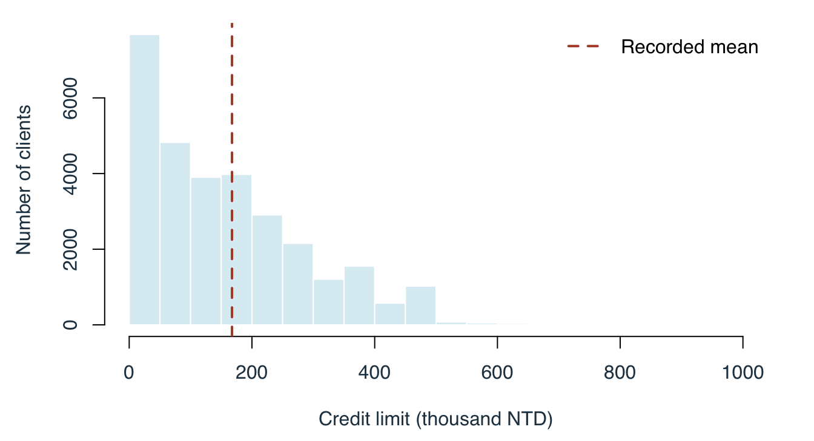
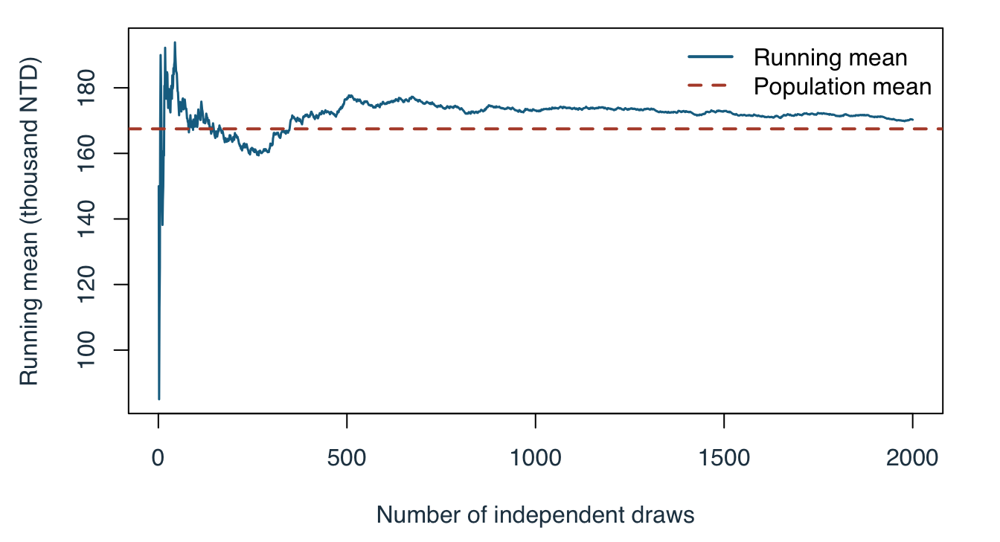
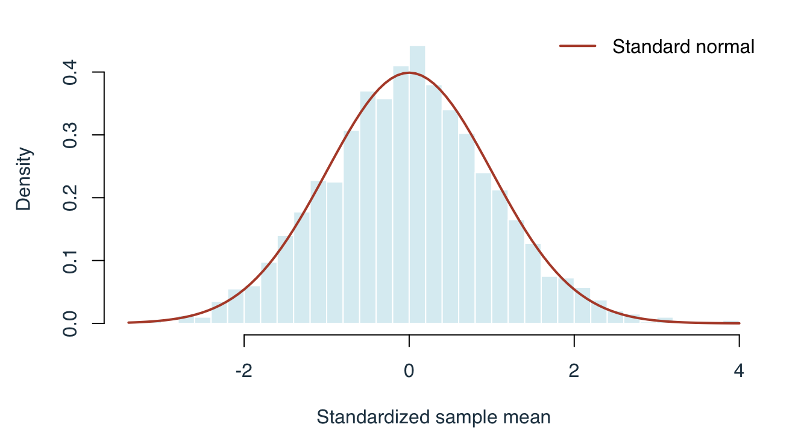
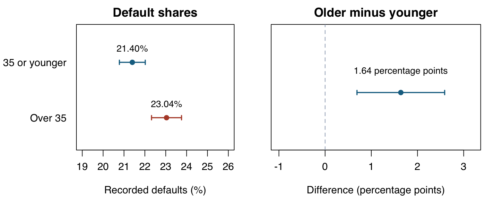

Chapter 2 Central Limit Theorem
The law of large numbers (LLN) and the central limit theorem (CLT) answer two different questions about sample averages. The LLN explains why a sample mean approaches its population counterpart. The CLT describes the remaining estimation error and thereby makes confidence intervals and tests possible. Under the conditions used in this chapter, that error is approximately Gaussian in large samples even when the observations themselves are not.
Prerequisites. Expectations and variances, independent random variables, sample means, and convergence in probability.
After working through this chapter, you should be able to:
- Explain the distinct roles of the law of large numbers and the central limit theorem.
- Derive large-sample approximations for sums and sample means.
- Standardize a statistic and use normal quantiles to approximate probabilities.
- Compare means from two independent samples.
Roadmap. The chapter first establishes why sample averages converge, then studies their large-sample distribution. It concludes by applying these results to differences between independent sample means and to the exercises in Section 2.5.
2.1 Law of large numbers
Definition 2.1 (Sample and Population) In statistics, a sample refers to a finite set of observations drawn from a population.
Empirical work usually relies on a sample because observing an entire population is impractical. A natural estimator of a population mean is the sample average of \(\{x_1,\dots,x_n\}\): \[ \overline{x}_n = \frac{1}{n}\sum_{i=1}^n x_i. \] This sample mean is an estimator of the true (population) mean \(\mathbb{E}(x_i)\) (assuming the latter exists). According to the law of large numbers (Theorem 2.1), this estimator is consistent. (see Def. 9.16 for the definition of convergence in probability.)
Theorem 2.1 (Law of large numbers) If the random variables \(x_i\) are i.i.d. and \(\mathbb{E}(|x_i|)<\infty\), then the sample mean (\(\overline{x}_n\)) is a consistent estimator of the population mean \(\mu=\mathbb{E}(x_i)\). In other words, the sample mean converges in probability to the population mean.
Proof. See Appendix 9.3.4.
Example 2.1 (Averages of credit limits) Consider the credit limits recorded in UCIcredit, described in Appendix 10.4. A credit limit is the maximum amount a client is authorised to borrow through their credit card; it is distinct from actual spending or the outstanding balance. In this dataset, it includes individual and supplementary family credit. For example, a limit of 200 thousand NTD represents an authorised credit line of NTD200,000. Figure 2.1 shows their distribution, expressed in thousands of New Taiwan dollars (NTD).
Code
data("UCIcredit", package="AEC")
clt_limits <- UCIcredit$LIMIT_BAL / 1000
clt_mu <- mean(clt_limits)
# Population variance uses N = 30,000; var(clt_limits) would use N - 1.
clt_variance <- mean((clt_limits-clt_mu)^2)
par(mar=c(4.5,4.5,1,2), family="sans")
hist(clt_limits, breaks=seq(0,1000,by=50),
col="#DCEEF3", border="white", main="",
xlab="Credit limit (thousand NTD)", ylab="Number of clients",
col.axis="#243F50", col.lab="#243F50")
abline(v=clt_mu, col="#B44C35", lwd=2, lty=2)
legend("topright", "Recorded mean", col="#B44C35", lwd=2,
lty=2, bty="n")
Figure 2.1: Recorded credit limits in UCIcredit. The dashed line marks the mean of the 30,000 recorded values.
To illustrate the LLN, define a sampling experiment: draw a client uniformly from these 30,000 records, note the credit limit, replace the record, and repeat independently. The fixed dataset is the population for this experiment, so its mean \(\mu\) and variance \(\sigma^2\) are known. They are not estimates of the corresponding quantities for all cardholders.
Code
| Records | Mean | Variance | SD |
|---|---|---|---|
| 30000 | 167.484 | 16833.9 | 129.745 |
The mean and standard deviation are in thousand NTD; the variance is in squared thousand NTD.
Code
clt_draw_n <- 2000L
clt_draws <- sample(clt_limits, clt_draw_n, replace=TRUE)
clt_running_mean <- cumsum(clt_draws) / seq_along(clt_draws)
par(mar=c(4.5,4.5,1,2), family="sans")
plot(seq_along(clt_draws), clt_running_mean, type="l", col="#176F91",
lwd=1.5, xlab="Number of independent draws",
ylab="Running mean (thousand NTD)",
col.axis="#243F50", col.lab="#243F50")
abline(h=clt_mu, col="#B44C35", lwd=2, lty=2)
legend("topright", c("Running mean","Population mean"),
col=c("#176F91","#B44C35"), lty=c(1,2), lwd=2, bty="n")
Figure 2.2: A running sample mean from 2,000 independent draws with replacement. The horizontal dashed line is the known mean of the recorded credit limits. The LLN concerns convergence, not a monotonic reduction in the error along every path.
Sampling with replacement makes the draws i.i.d., even though the records themselves need not form a random sample of a wider population. The LLN then applies directly to this experiment.
Consistency tells us that the approximation improves with the sample size, but it does not yet quantify the error in a given sample. We first obtain a probability bound and then turn to the richer approximation supplied by the CLT.
A first answer is provided by the Chebyshev inequality. Assume the \(x_i\)’s are independently drawn from a distribution of mean \(\mu\) and variance \(\sigma^2\). We have: \[ \mathbb{E}(\bar{x}_n) = \mu \quad \mbox{ and } \quad \mathbb{V}ar(\mu - \bar{x}_n) = \frac{1}{n}\sigma^2 \underset{n \rightarrow \infty}{\rightarrow} 0. \] The Chebyshev inequality (Proposition 9.11) states that, for any \(\varepsilon > 0\) (even very small), we have: \[ \mathbb{P}(|\bar{x}_n-\mu|>\varepsilon) \le \frac{\mathbb{V}ar(\mu - \bar{x}_n)}{\varepsilon^2} = \frac{\sigma^2}{n\varepsilon^2} \underset{n \rightarrow \infty}{\rightarrow} 0. \] For the sampling experiment in Example 2.1, take \(n=2{,}000\) independent draws and \(\varepsilon=10\), corresponding to NTD10,000. Using the known variance of the recorded values, Chebyshev’s inequality gives \[ \mathbb{P}(|\bar{x}_n-\mu|>10)\leq\frac{\sigma^2}{2{,}000\times10^2} =\text{0.0842}. \] This is a probability over repeated samples from the fixed dataset. It is an exact upper bound, not a normal approximation or a bound obtained by substituting an estimated variance.
However, this only gives bounds for such probabilities. The central limit theorem provides richer information, as it gives the approximate distribution of the estimation error.
2.2 Central Limit Theorem (CLT)
Theorem 2.2 (Lindeberg–Lévy central limit theorem, CLT) If \(x_n\) is an i.i.d. sequence of random variables with mean \(\mu\) and (finite) variance \(\sigma^2\), then: \[ \boxed{\sqrt{n} (\bar{x}_n - \mu) \overset{d}{\rightarrow} \mathcal{N}(0,\sigma^2), \quad \mbox{where} \quad \bar{x}_n = \frac{1}{n} \sum_{i=1}^{n} x_i.} \] [“\(\overset{d}{\rightarrow}\)” denotes the convergence in distribution (see Def. 9.19)]
Proof. See Appendix 9.3.4.
According to the CLT, when \(n\) is large, the distribution of the error \(\bar{x}_n-\mu\) is approximately normal, whatever the distribution of the \(x_i\)’s, provided that their mean \(\mu\) and variance \(\sigma^2\) exist. Its approximate mean is zero and its standard deviation is \(\sigma/\sqrt{n}\). (We then say that the convergence rate is in \(\sqrt{n}\).) Quantiles of the normal distribution can therefore be used to compute approximate confidence intervals for \(\mu\) from the sample \(\{x_1,\dots,x_n\}\).
Example 2.2 (The sampling distribution of a credit-limit average) Return to the sampling experiment in Example 2.1. We repeat it 2,000 times, drawing 200 clients with replacement each time. For every sample we compute \[ Z=\frac{\sqrt{n}(\bar{x}_n-\mu)}{\sigma},\qquad n=200, \] using the known mean and standard deviation of the fixed population. Although the individual credit limits are right-skewed, the distribution of their standardized average is already close to the standard normal density in Figure 2.3.
Code
clt_sample_n <- 200L
clt_repetitions <- 2000L
clt_sample_means <- replicate(clt_repetitions,
mean(sample(clt_limits, clt_sample_n, replace=TRUE)))
clt_z <- sqrt(clt_sample_n)*(clt_sample_means-clt_mu)/sqrt(clt_variance)
par(mar=c(4.5,4.5,1,2), family="sans")
hist(clt_z, breaks=30, probability=TRUE, col="#DCEEF3", border="white",
main="", xlab="Standardized sample mean", ylab="Density",
ylim=c(0,.46), col.axis="#243F50", col.lab="#243F50")
curve(dnorm(x), add=TRUE, col="#B44C35", lwd=2)
legend("topright", "Standard normal", col="#B44C35", lwd=2, bty="n")
Figure 2.3: Standardized means of credit limits: 2,000 independent samples of 200 draws with replacement from UCIcredit. The curve is the standard normal density.
The number of repetitions determines how smoothly we can display the sampling distribution. The number of draws in each sample determines the quality of the CLT approximation; these are two different quantities.
This web interface illustrates the CLT with simulations (select the “CLT” block).
The CL theorem was first postulated by the mathematician Abraham de Moivre. In an article published in 1733, he used the normal distribution to approximate the distribution of the number of heads resulting from many tosses of a fair coin. This finding was nearly forgotten until Pierre-Simon Laplace recalled it in his Théorie analytique des probabilités, published in 1812. Laplace expanded De Moivre’s finding by approximating the binomial distribution with the normal distribution.
Practice: Exercises 2.5 and 2.6 use the CLT to design a simulation and to determine its required precision.
The CLT can be extended to the case where each \(x_i\) is a vector. (In that case, and if the dimension of \(x_i\) is \(m\), then \(\mathbb{V}ar(x_i)\) is a \(m\times m\) matrix.) Here is the multivariate CLT:
Theorem 2.3 (Multivariate Central limit theorem, CLT) If \(\mathbf{x}_n\) is an i.i.d. sequence of \(m\)-dimensional random variables with mean \(\boldsymbol\mu\) and variance \(\Sigma\), where \(\Sigma\) is a positive definite matrix, then: \[ \boxed{\sqrt{n} (\bar{\mathbf{x}}_n - \boldsymbol\mu) \overset{d}{\rightarrow} \mathcal{N}(\mathbf{0},\Sigma), \quad \mbox{where} \quad \bar{\mathbf{x}}_n = \frac{1}{n} \sum_{i=1}^{n} \mathbf{x}_i.} \]
2.3 Comparison of sample means
The one-sample CLT extends directly to comparisons between populations. The key object is then the difference between two independent sample means.
Consider two independent samples \(\{m_1,\dots,m_{n_m}\}\) and \(\{w_1,\dots,w_{n_w}\}\). Assume that the \(m_i\)’s are i.i.d. with mean \(\mu_m\) and variance \(\sigma_m^2\), and that the \(w_i\)’s are i.i.d. with mean \(\mu_w\) and variance \(\sigma_w^2\).
If \(n_m\) and \(n_w\) are large, the CLT gives the approximations: \[ \sqrt{n_m}(\bar{m} - \mu_m) \overset{a}{\sim} \mathcal{N}(0,\sigma^2_m) \quad \mbox{and} \quad \sqrt{n_w}(\bar{w} - \mu_w) \overset{a}{\sim} \mathcal{N}(0,\sigma^2_w), \] or \[ \bar{m} \overset{a}{\sim} \mathcal{N}\left(\mu_m,\frac{\sigma^2_m}{n_m}\right) \quad \mbox{and} \quad \bar{w} \overset{a}{\sim} \mathcal{N}\left(\mu_w,\frac{\sigma^2_w}{n_w}\right). \]
Since the two samples are independent, \(\bar{m}\) and \(\bar{w}\) are independent, and we get: \[ \bar{m} - \bar{w} \overset{a}{\sim} \mathcal{N}\left(\mu_m-\mu_w,\tau^2\right) \quad \mbox{with} \quad \tau^2 = \frac{\sigma^2_m}{n_m}+\frac{\sigma^2_w}{n_w}. \] This can be used to test the null hypothesis \(H_0: \; \mu_m-\mu_w = 0\) (see Section 3). In practice, the unknown population variances are replaced by their sample counterparts, giving the estimated standard error \(\hat\tau\). Under \(H_0\), the probability that \(\bar{m}-\bar{w}\) lies in \([-1.96\hat\tau,1.96\hat\tau]\) (respectively \([-2.58\hat\tau,2.58\hat\tau]\)) is approximately 0.95 (respectively 0.99) in large samples [see Table 9.1].
For instance, if \(\bar{m}-\bar{w}\) is not in \([-2.58\hat\tau,2.58\hat\tau]\), then we reject the null hypothesis at the 1% significance level.
Example 2.3 (Comparing default shares across age groups) Do recorded default frequencies differ between clients aged 35 or younger and clients over 35? Use the next-month payment-default indicator \(D\) in UCIcredit (Appendix 10.4). It equals one for a recorded default and zero otherwise. The mean of a binary variable is its proportion of ones, so the comparison-of-means framework applies directly to default shares.
As in the preceding formulas, let \(m\) denote the older group and \(w\) the younger group. Their means are the corresponding default probabilities: \(\mu_m=p_m\) and \(\mu_w=p_w\). We estimate them by the observed shares \(\widehat p_m\) and \(\widehat p_w\).
Code
clt_younger <- UCIcredit$default_next_month[UCIcredit$AGE<=35]
clt_older <- UCIcredit$default_next_month[UCIcredit$AGE>35]
clt_group_summary <- data.frame(
Group=c("35 or younger","Over 35"),
Clients=c(length(clt_younger),length(clt_older)),
Defaults=c(sum(clt_younger),sum(clt_older)),
Share=100*c(mean(clt_younger),mean(clt_older)))
data_table(clt_group_summary, digits=c(0,0,0,2),row.names=FALSE,
col.names=c("Age group","Clients","Recorded defaults","Default share (%)"))| Age group | Clients | Recorded defaults | Default share (%) |
|---|---|---|---|
| 35 or younger | 16809 | 3597 | 21.40 |
| Over 35 | 13191 | 3039 | 23.04 |
We treat the clients as independent observations within and across groups. Unlike the preceding simulation, this is a working sampling assumption about the source data, rather than a property guaranteed by our drawing procedure. The groups can also differ in characteristics other than age.
Estimate \(p_m-p_w\) by \(\widehat p_m-\widehat p_w\). The estimated standard error remains \[ \widehat\tau=\sqrt{\frac{s_m^2}{n_m}+\frac{s_w^2}{n_w}}. \] Here the population variance within group \(g\) is \(p_g(1-p_g)\); its sample counterpart is \(s_g^2=\frac{n_g}{n_g-1}\widehat p_g(1-\widehat p_g)\). We test \(H_0:p_m=p_w\) against \(H_1:p_m\ne p_w\) using \(z=(\widehat p_m-\widehat p_w)/\widehat\tau\).
Code
clt_mean_difference <- mean(clt_older)-mean(clt_younger)
clt_difference_se <- sqrt(var(clt_older)/length(clt_older) +
var(clt_younger)/length(clt_younger))
clt_difference_z <- clt_mean_difference/clt_difference_se
clt_difference_ci <- clt_mean_difference+c(-1,1)*qnorm(.975)*clt_difference_se
clt_p_value <- 2*pnorm(-abs(clt_difference_z))
data_table(data.frame(Difference=100*clt_mean_difference,
SE=100*clt_difference_se, z=clt_difference_z,
Lower=100*clt_difference_ci[1], Upper=100*clt_difference_ci[2],
p.value=clt_p_value), digits=2,row.names=FALSE,
col.names=c("Difference (pp)","SE (pp)","z","95% lower (pp)","95% upper (pp)","p-value"))| Difference (pp) | SE (pp) | z | 95% lower (pp) | 95% upper (pp) | p-value |
|---|---|---|---|---|---|
| 1.64 | 0.48 | 3.39 | 0.69 | 2.59 | <0.001 |
The older group’s recorded default share is 1.64 percentage points higher, with an estimated standard error of 0.48 percentage points. The approximate 95% confidence interval for the difference is [0.69, 2.59] percentage points. This is a difference between probabilities, not a percentage change in risk.
The standardized difference is \(z=\) 3.39, with a two-sided p-value of 0.00071. We reject equality at both the 5% and 1% levels under the independent-sampling model. Figure 2.4 displays the shares and their difference; the interval for the difference excludes zero.

Figure 2.4: Recorded next-month default shares by age group in UCIcredit (left) and the older-minus-younger difference (right). Horizontal segments are approximate 95% confidence intervals under independent sampling. The dashed vertical line marks equal default probabilities.
2.4 Chapter recap
- Theorem 2.1 explains why a sample mean converges to its population mean; it is a consistency result.
- Chebyshev’s inequality bounds the probability of a large estimation error but does not describe its full distribution.
- Theorem 2.2 gives the large-sample distribution of the standardized sample mean and therefore supports confidence intervals and tests.
- The multivariate extension in Theorem 2.3 applies the same logic to vectors of sample moments.
- Section 2.3 combines two independent CLT approximations to compare population means.
2.5 Exercises
Attempt each question and explain your reasoning, including for true-or-false statements. Foundation exercises apply a result directly; Standard exercises require several steps or a short proof; Advanced exercises combine several results or require a longer derivation. Worked solutions and exercise-specific hints are reserved for teaching sessions and are not included in this student edition.
Exercise 2.1 (Financial returns and the CLT) Advanced | Application
Review Section 2.
Consider a financial asset whose value on day \(i\) is \(S_i\). We set \(s_i = \log(S_i/S_{i-1})\) and we assume that \(s_i = \mu + \sigma Z_i\), where the \(Z_i\) are identically and independently distributed (i.i.d.) and are drawn from a Student distribution with \(\nu\) degrees of freedom (i.e. \(Z_i \sim \text{i.i.d.}\, t(\nu)\)).
An investor buys the asset at date \(0\) and holds it until date \(n\). We denote by \(\bar{s}_n\) the average of \(s_i\) between periods \(0\) and \(n\), that is \(\bar{s}_n = \frac{1}{n} \sum_{i=1}^n s_i\).
We recall that if \(Z \sim t(\nu)\), then \(\mathbb{E}(Z) = 0\) and \(\mathbb{V}ar(Z) = \frac{\nu}{\nu - 2}\) for \(\nu > 2\).
Interpret \(s_i\).
Express \(S_n\) as a function of \(\bar{s}_n\) and of \(S_0\).
Assuming that \(n\) is large, give an approximation of the distribution of \(\sqrt{n}\bar{s}_n\).
Show that \(\mathbb{P}(S_n < S_0) = \mathbb{P}(\sqrt{n}\bar{s}_n < 0)\).
For large \(n\), derive an approximation to the probability that the investor loses money by holding the asset between dates 0 and \(n\).
Exercise 2.2 (Roulette and the Central Limit Theorem) Standard | Application
Review Section 2.
The pockets of the roulette wheel are numbered from 0 to 36. There are 18 black pockets, 18 red pockets, and one green pocket (numbered 0). The probability that the ball stops in pocket \(i\), \(i \in\) 0, 1, 2, ..., 36 is 1/37. Each player chooses one color (black or red) and gives 1 $ to the Casino. If the ball lands in a compartment whose color is as bet by the player, then the player earns 2 $. Otherwise, she gets 0.
Determine the payoffs of the Casino when there is only one player who plays once.
One player plays three times. Compute the probability that the Casino loses money.
There are 100 players. Each one plays 100 times. The 10,000 resulting games are assumed to be independent. Approximate the distribution of the casino’s total payoff.
Propose an analytical approximation of the probability that the Casino loses money after \(n\) games, where \(n\) is a large number.
Exercise 2.3 (Repeated-payoff game: true or false?) Standard | True or false
Review Section 2.
Consider a repeated game. The payoff of each round is:
\(-2\) with probability \(\dfrac{1}{2}\),
\(7\) with probability \(\dfrac{1}{7}\),
\(0\) otherwise.
We play \(n\) rounds (\(n\) is large). Payoffs are independent across rounds. Let \(x_i\) be the payoff in round \(i\), and let \[z_n=\sum_{i=1}^n x_i \qquad\text{so that}\qquad z_n=n\bar{x}_n, \quad \bar{x}_n=\frac{1}{n}\sum_{i=1}^n x_i.\] We note that \(\mathbb{E}(x_i)=0\) and we admit (without calculation) that \(\mathbb{V}ar(x_i)=9\).
For each statement, decide whether it is true or false and justify your answer.
\(\mathbb{V}ar(z_n)=9\).
\(z_n\) approximately follows a Normal distribution of mean \(0\) and variance \(9n\).
If \(n=900\), an interval containing approximately 95% of the sampling distribution of \(\bar{x}_n\) is \([-1.96,1.96]\).
We approximately have \(\bar{x}_n \sim \mathcal{N}(0,9)\).
\(\mathbb{P}(z_n<0)\) and \(\mathbb{P}(z_n>0)\) are close to \(\dfrac{1}{2}\).
Exercise 2.4 (Comparing two sample means: true or false?) Standard | True or false
Review Section 2.
Consider two samples, each of size \(n\), where \(n\) is large. The first sample is \(\{x_1,\dots,x_n\}\) and the second sample is \(\{y_1,\dots,y_n\}\). We assume that all observations are independent (within and across samples). The \(x_i\) are drawn from a distribution with mean \(\mu_x\) and variance \(\sigma_x^2\), and the \(y_i\) are drawn from a distribution with mean \(\mu_y\) and variance \(\sigma_y^2\).
We denote by \(\bar{x}_n\) and \(\bar{y}_n\) the sample means: \[\bar{x}_n=\frac{1}{n}\sum_{i=1}^n x_i, \qquad \bar{y}_n=\frac{1}{n}\sum_{i=1}^n y_i.\]
For each statement, decide whether it is true or false and justify your answer.
The distribution of \(\bar{x}_n-\mu_x\) is approximately \(\mathcal{N}(0,\sigma_x^2)\).
The variance of \(\bar{x}_n\) is \(\sigma_x^2\).
If \(\mu_x=\mu_y\), the distribution of \(\sqrt{n}(\bar{x}_n-\bar{y}_n)\) is approximately \(\mathcal{N}(0,\sigma_x^2+\sigma_y^2)\).
If \(\sigma_x^2=\sigma_y^2=0.5\), \(\bar{x}_n=1\), \(\bar{y}_n=1.1\), and \(n=900\), a test of mean comparison cannot reject \(H_0:\mu_x=\mu_y\) at the 5% significance level.
\(\bar{x}_n-\bar{y}_n\) is a consistent estimator of \(\mu_x-\mu_y\).
Exercise 2.5 (Precision of Buffon's needle estimator) Advanced | Analytical
Review Section 2.
Return to Buffon’s needle experiment in Example 1.4. Let \(X_i\) equal one when needle \(i\) crosses a groove and zero otherwise. In the version of the experiment considered there, \[ \mathbb{E}(X_i)=p=\frac{1}{\pi}. \] After \(n\) independent throws, estimate \(\pi\) by \[ \widehat\pi=\frac{1}{\overline X_n}. \]
- Use the CLT to obtain an approximate distribution for \(\overline X_n\).
- Apply a first-order approximation to obtain the approximate standard error of \(\widehat\pi\).
- Find the smallest integer \(n\) for which the approximate 95% margin of error for \(\widehat\pi\) is at most \(0.01\). Use the true value of \(\pi\) when planning the required sample size.
Exercise 2.6 (Approximating normal quantiles with a coin) Standard | Simulation design
Review Section 2.
Suppose that you have only a fair coin and enough time to repeat an experiment many times.
- Design a simulation that produces observations whose distribution is approximately \(\mathcal{N}(0,1)\). State how many coin tosses constitute one simulated observation and how that observation is standardized.
- Explain how repeated observations from this simulation can be used to approximate the 1st through 99th percentiles of the standard normal distribution.
- Describe how the accuracy of the approximation changes when you increase (i) the number of tosses per observation and (ii) the number of simulated observations.